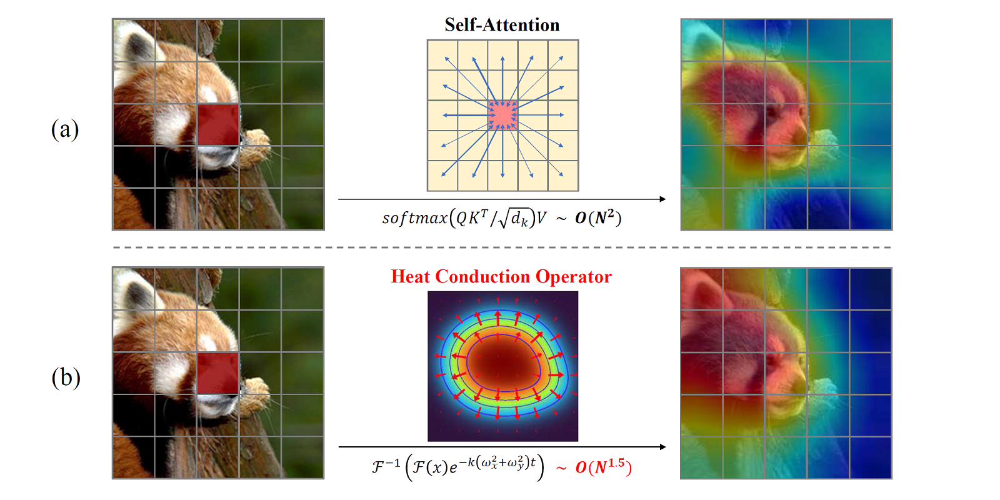

Hongtian YuPh.D. candidate
|

|
Hongtian YuPh.D. candidate
|
|
I am a Ph.D. candidate of Learning and Machine Perception Laboratory (LAMP) in School of Electronic, Electrical and Communication Engineering, University of Chinese Academy of Sciences, advised by Prof. Qixiang Ye and PostDoc. Yunfan Liu. I received my B.E. degree in University of Chinese Academy of Sciences in June 2021.
My research interests include object detection and representation learning in Computer Vision field, and I am currently working on high-energy particle reconstruction as "Ai4HEP".
 |
Spatial Transform Decoupling for Oriented Object Detection
Hongtian Yu, Yunjie Tian, Qixiang Ye, Yunfan Liu The 38th Annual AAAI Conference on Artificial Intelligence, 2024 [paper] [arXiv] [code] |
 |
VMamba: Visual State Space Model
Yue Liu, Yunjie Tian, Yuzhong Zhao, Hongtian Yu, Lingxi Xie, Yaowei Wang, Qixiang Ye, Yunfan Liu [arXiv] [code] [usage example in Oriented Object Detection] |
|  |
vHeat: Building Vision Models upon Heat Conduction
Zhaozhi Wang, Yue Liu, Yunfan Liu, Hongtian Yu, Yaowei Wang, Qixiang Ye, Yunjie Tian [arXiv] [code] |
 |
Vision Calorimeter for Anti-neutron Reconstruction: A Baseline
Hongtian Yu, Yangu Li, Mingrui Wu, Letian Shen, Yue Liu, Yunxuan Song, Qixiang Ye, Xiaorui Lyu, Yajun Mao, Yangheng Zheng, Yunfan Liu [arXiv] [code] |